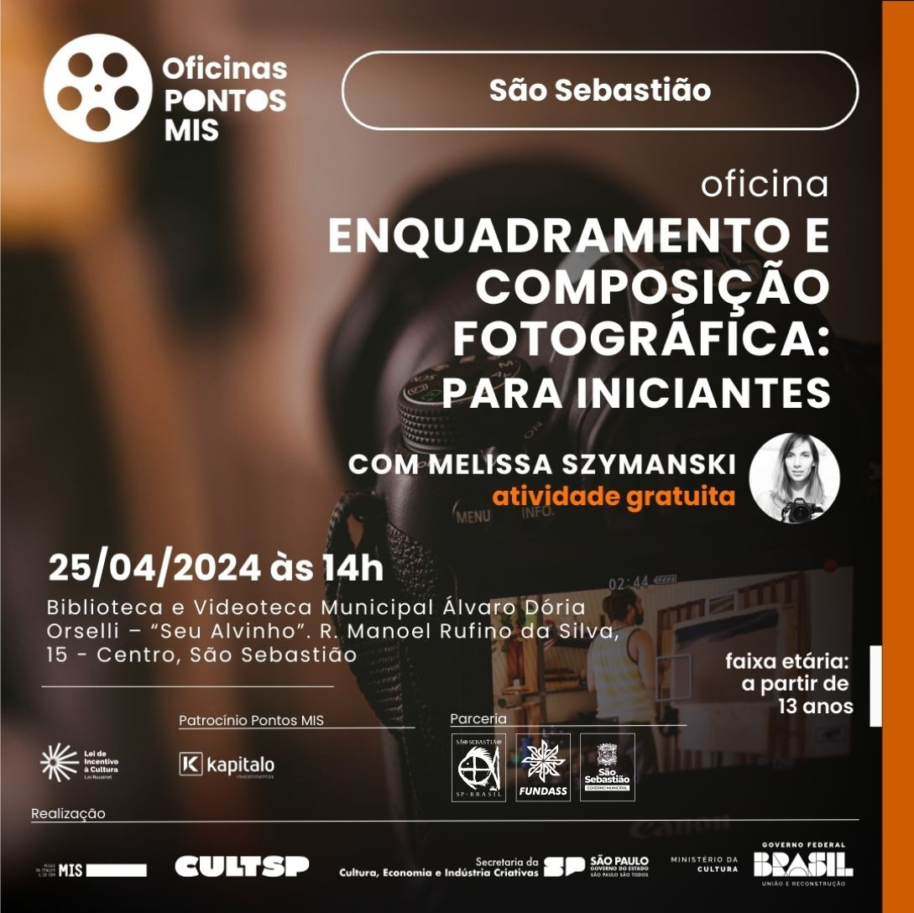

Notícias
Biblioteca Municipal de São Sebastião disponibiliza WhatsApp para dúvidas e informações sobre os serviços oferecidos
A Biblioteca Municipal de São Sebastião “Álvaro Dória Orselli – Seu Alvinho” disponibiliza um novo […]
Leia Mais

Prefeitura de São Sebastião e Pontos MIS realizam oficina gratuita sobre fotografia
No dia 25 de abril, a Prefeitura de São Sebastião, por meio da Fundação Educacional […]
Leia Mais.jpeg)
Prefeitura de São Sebastião e Pontos MIS realizam oficina ‘Telenovela: um bate-papo’
A Prefeitura de São Sebastião, por meio da Fundação Educacional e Cultural ‘Deodato Sant’Anna’ (Fundass), […]
Leia Mais